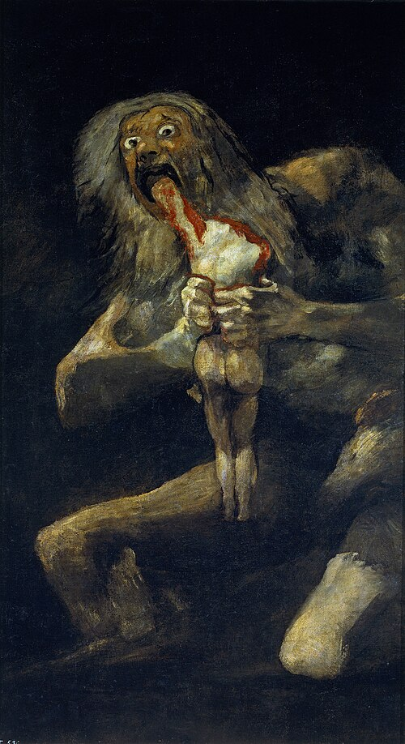

Saturn in mythology
Saturn was the roman god of time, agriculture and dissulotion, among other things. He was also the father of several important gods of the roman pantheon, including Jupiter, king of the gods.
As with his greek equivalent, Chronus, he was overthrown by his son. Unlike Chronus, however, he was not eternally imprisoned, but instead arrived in Italy bringing civilization and agriculture, eventually leading to a golden age.
In modern times, his most famous depiction is likely the painting 'Saturn devouring his son' by Fransisco Goya
